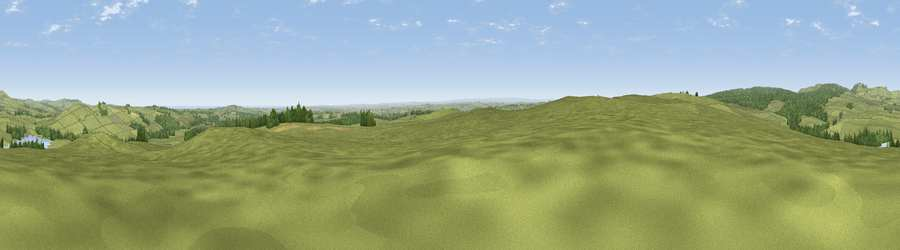

Viewpoint near Nunnykirk
#8333 in England · top 20% of its area beats it · near NunnykirkThe view, rendered

A 360° render of this exact spot computed from the terrain model, tree cover and land cover — summer colours, afternoon light, calibrated against photographs of famous viewpoints. Real trees, hedges and buildings will differ in detail.
The panorama
Grey silhouette: terrain skyline in each direction (720 bearings, Earth curvature and refraction included). Dashed green: skyline with trees (+15 m) and buildings (+8 m) as obstacles. Blue strip: how far the ground is visible on each bearing.
Where the view opens
Wedge length = distance to the farthest visible ground on that bearing (vegetation-aware). Rings at 10, 25 and 50 km.
What fills the view
83% grassland · 12% woodland · 3% cropland · 2% water
Angular shares of the visible panorama (visual magnitude), not map area. Landscape diversity 0.27 (0–1 Shannon).
Key numbers
More beautiful places nearby
The staircase of upgrades: each row has a higher view potential than everything closer. Driving times are estimates from straight-line distance, calibrated against real road routing — check an actual route before setting out.
| Place | Direction | Drive | Score |
|---|---|---|---|
| Viewpoint near Nunnykirk | W · 1 km | ~3 min | 67.9 |
| Viewpoint near Rothbury | N · 6 km | ~13 min | 70.3 |
| Dove Crag | N · 6 km | ~13 min | 82.3 |
| Viewpoint near Glanton | N · 24 km | ~39 min | 82.9 |
| Viewpoint c12273_7856 | NNW · 24 km | ~40 min | 83.7 |
| Viewpoint c12396_7887 | NNW · 29 km | ~46 min | 85.7 |
| Viewpoint near Chillingham | N · 33 km | ~51 min | 88.1 |
| Viewpoint near Easington | SE · 100 km | ~125 min | 90.2 |
55.22401, -1.93198 · source: screening · position refined by local search. Computed location — check access rights before visiting.